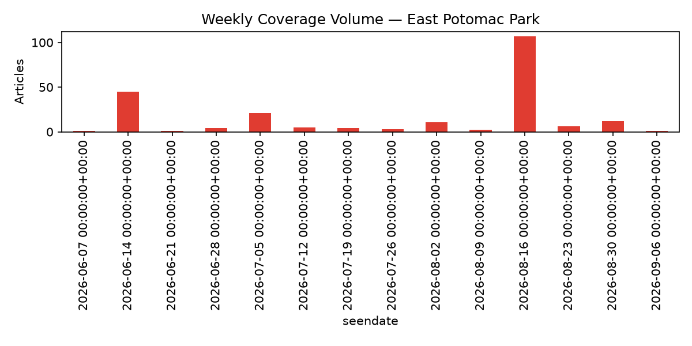
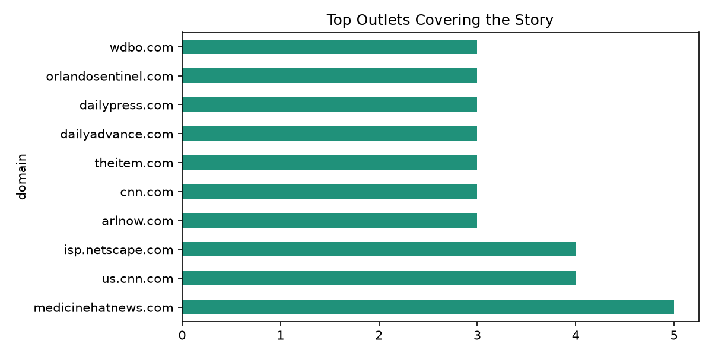

Automatically updated daily. Last updated: September 01, 2026 at 12:44 UTC


| Date Filed | Entry # | Description |
|---|---|---|
| 2026-08-31 | nan | |
| 2026-08-31 | nan | |
| 2026-08-31 | nan | MINUTE ORDER. In light of the parties' 66 Proposed Briefing Schedule, the Court ORDERS the parties to appear for a status conference on September 3, 2026, at 2:00 pm. If the parties are unable to attend at that time, they shall propose alternative times on September 3 or 4 for the Court's consideration. Signed by Judge Ana C. Reyes on 8/31/2026. (lcacr3) |
| 2026-08-27 | 66.0 | PROPOSED BRIEFING SCHEDULE (Joint Filing) by DC PRESERVATION LEAGUE, ALEX DICKSON, DAVE ROBERTS. (Bardwell, Will) (Entered: 08/27/2026) |
| 2026-08-21 | nan | Set/Reset Deadlines/Hearings: Joint Proposed Briefing Schedule due by 8/27/2026. (zcdw) |
| 2026-08-21 | nan | |
| 2026-08-20 | nan | MINUTE ORDER granting 65 Joint Motion for Extension of Time. The Court ORDERS the Parties to file their joint proposed briefing schedule on or before August 27, 2026. Signed by Judge Ana C. Reyes on 8/20/2026. (lcacr3) |
| 2026-08-20 | 65.0 | Joint MOTION for Extension of Time to File Proposed Briefing Schedule by DC PRESERVATION LEAGUE, ALEX DICKSON, DAVE ROBERTS. (Attachments: # 1 Text of Proposed Order)(Samburg, Mark) (Entered: 08/20/2026) |
| 2026-08-20 | nan | |
| 2026-08-18 | 64.0 | NOTICE of Intent to File Amended and Supplemental Complaint by DC PRESERVATION LEAGUE, ALEX DICKSON, DAVE ROBERTS (Bardwell, Will) (Entered: 08/18/2026) |
| 2026-08-14 | nan | Set/Reset Deadlines/Hearings: Plaintiff's Notice of Intent due by 8/18/2026. (zcdw) |
| 2026-08-14 | nan | |
| 2026-08-13 | nan | MINUTE ORDER. Substantial developments have occurred since Plaintiffs filed their 1 Complaint and 8 Motion to Stay, and the Court finds that the operative complaint is outdated. As such, the pending 34 Motion to Dismiss addresses deficiencies that may not appear from an amended complaint. In the interest of judicial economy and efficient case management, Plaintiffs should consider whether to file an amended complaint. If they do not, and if the Court grants the pending 34 Motion to Dismiss, it will do so with prejudice. Plaintiffs shall advise the Court, on or before August 18, 2026, on whether they intend to amend their filings. If so, the Court ORDERS the parties to meet and confer and jointly file a proposed briefing schedule to govern further proceedings. The parties shall file their proposed briefing schedule on or before August 21, 2026. Signed by Judge Ana C. Reyes on 8/13/2026. (lcacr3) |
| 2026-08-13 | nan | |
| 2026-08-13 | nan | |
| 2026-08-10 | nan | |
| 2026-07-17 | 63.0 | RESPONSE TO ORDER OF THE COURT Defendants' Response to the Court's July 6, 2026, Minute Order by JESSICA BOWRON, DOUG BURGUM, DEPARTMENT OF INTERIOR, NATIONAL PARK SERVICE re Order,,,,, (Robertson, Michael) Modified event on 7/20/2026 (znmw). (Entered: 07/17/2026) |
| 2026-07-15 | 62.0 | TRANSCRIPT OF PROCEEDINGS before Judge Ana C. Reyes held on 5/4/2026; Page Numbers: 1-50. Date of Issuance:7/15/2026. Court Reporter Christine T. Asif, Telephone number 202-354-3247, Transcripts may be ordered by submitting the Transcript Order FormFor the first 90 days after this filing date, the transcript may be viewed at the courthouse at a public terminal or purchased from the court reporter referenced above. After 90 days, the transcript may be accessed via PACER. Other transcript formats, (multi-page, condensed, CD or ASCII) may be purchased from the court reporter.NOTICE RE REDACTION OF TRANSCRIPTS: The parties have twenty-one days to file with the court and the court reporter any request to redact personal identifiers from this transcript. If no such requests are filed, the transcript will be made available to the public via PACER without redaction after 90 days. The policy, which includes the five personal identifiers specifically covered, is located on our website at www.dcd.uscourts.gov. Redaction Request due 8/5/2026. Redacted Transcript Deadline set for 8/15/2026. Release of Transcript Restriction set for 10/13/2026.(Asif, Christine) (Entered: 07/15/2026) |
| 2026-07-08 | nan | Set/Reset Deadlines/Hearings: Response to Court's Order due by 7/17/2026. (zcdw) |
| 2026-07-08 | nan | |
| 2026-07-08 | 60.0 | TRANSCRIPT OF MOTION HEARING before Judge Ana C. Reyes held on July 2, 2026; Page Numbers: 1-130. Court Reporter Sonja L. Reeves, RDR, CRR, Telephone number (202) 354-3246, Transcripts may be ordered by submitting the Transcript Order FormFor the first 90 days after this filing date, the transcript may be viewed at the courthouse at a public terminal or purchased from the court reporter referenced above. After 90 days, the transcript may be accessed via PACER. Other transcript formats, (multi-page, condensed, CD or ASCII) may be purchased from the court reporter.NOTICE RE REDACTION OF TRANSCRIPTS: The parties have twenty-one days to file with the court and the court reporter any request to redact personal identifiers from this transcript. If no such requests are filed, the transcript will be made available to the public via PACER without redaction after 90 days. The policy, which includes the five personal identifiers specifically covered, is located on our website at www.dcd.uscourts.gov. Redaction Request due 7/29/2026. Redacted Transcript Deadline set for 8/8/2026. Release of Transcript Restriction set for 10/6/2026.(Reeves, Sonja) (Entered: 07/08/2026) |
| 2026-07-06 | nan | |
| 2026-07-06 | nan | |
| 2026-07-06 | nan | MINUTE ORDER. As discussed during last week's motion hearing, the Court ORDERS the Government to respond to the following questions on or before July 17, 2026. 1. Has the Secretary of the Interior or any other high-ranking official made any statements or given any directives to anyone at the Agency--oral or written--concerning the President's statement that they will begin "build[ing] one of the Greatest Golf Courses in the world" by September 1, 2026? Donald J. Trump, Truth Social (June 28, 2026, 2:42 PM), https://truthsocial.com/@realDonaldTrump/posts/116829203090822692; 2. On what date did Clark Construction conduct testing on the excavated soil, and when did NPS receive the results? See Dkt. 38-1 at 2-3 (Nersesian Decl.); 3. Which individuals from the Agency accompanied President Trump during the site visit?; and 4. Who created the conceptual renderings reviewed at that visit, and who currently possesses or maintains those renderings? Lastly, the Court ORDERS the parties to meet and confer regarding proposed language for an interim preservation protocol governing activities at the site pending Court action. Signed by Judge Ana C. Reyes on 7/6/2026. (lcacr3) |
| 2026-07-02 | nan | |
| 2026-07-02 | nan | Minute Entry for proceedings held before Judge Ana C. Reyes: Motion Hearing held on 7/2/2026 re 8 Motion to Stay or in the alternative Motion for Preliminary Injunction and 34 Motion to Dismiss for Lack of Jurisdiction and for Failure to State a Claim. Motions heard and taken under advisement. (Court Reporter: Sonja Reeves) (zcdw) Modified on 8/10/2026 to correct hearing date (zcdw). |
| 2026-07-01 | nan | MINUTE ORDER. In preparation for tomorrow's motion hearing, the Court ORDERS the Government to be prepared to discuss: (1) Whether anyone at the National Garden of American Heroes Foundation or the O'Rourke Group has communicated with the National Park Service or the Department of the Interior regarding the proposed golf course and, if so, the nature and substance of those communications; (2) What commitments, if any, the Secretary of Interior or his delegates have made concerning President Trump's statements that they "will build one of the Greatest Golf Courses in the world." Donald J. Trump, Truth Social (June 28, 2026, 2:42 PM), https://truthsocial.com/@realDonaldTrump/posts/116829203090822692; (3) How the Government intends to undertake the actions listed in its Motion to Dismiss--including "contract for architectural and design services" and "compliance with NEPA, Section 106, Section 7 of the Endangered Species Act, the Organic Act, and any other applicable laws and regulations"--by September 1, 2026. Dkt. [34-1] at 24; see Trump, supra; (4) On what basis Mr. Fazio has been appointed or designated as the architect or designer of the proposed golf course. See Trump, supra; (5) Whether NPS or the Department of the Interior has entered into any contract or agreement--oral or written--with respect to the construction of the proposed golf course by September 1, 2026; and (6) Whether any blueprints, plans, or conceptual designs for the proposed golf course exist and, if so, the current status of their review or approval. Signed by Judge Ana C. Reyes on 7/1/2026. (lcacr3) |
| 2026-07-01 | nan | |
| 2026-07-01 | nan | |
| 2026-06-30 | nan | MINUTE ORDER granting 59 The Walter J. Travis Society's Unopposed Motion for Leave to File Amicus Brief. Signed by Judge Ana C. Reyes on 6/30/2026. (lcacr3) |